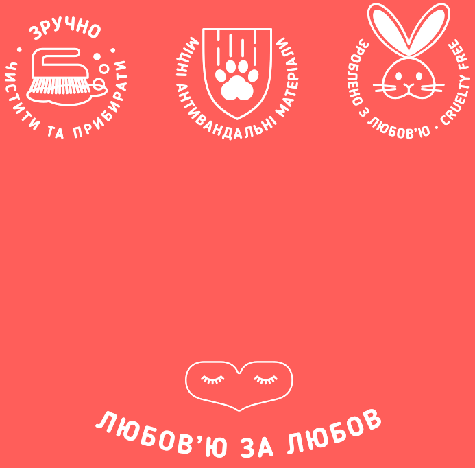

Історія бренду
Мало хто знає, що ідейною натхненницею бренду Happy Peppy є маленька, але дуже творча дівчинка Маша.
Вона довгий час мріяла про пухнастого друга, а їй купили золотих рибок. Юна леді дуже засмутилась, але
одного дня у родині все ж з’явилося веселе поповнення - два довго очікуваних пухнастих шпіца - Хеппі та
Пеппі. І тут почалось велике облаштування тваринок. Однак маленькій господарці дуже не вистачало якогось
яскравого ліжечка для своїх улюбленців, особливого кольору та матеріалу на дотик. Кожного разу коли ми
купляли корм для песиків, Марійка переглядала лежанки, коврики, матрасики, але нічого не відкликалось в
її середеньці. А коли вона нарешті вподобала лежанку, то тато сказав, що функціонал не дуже, чохол не
змінний. Але Маша не розгубилася і вирішила зробити ліжечко сама. В хід пішли ковдри, подушки, коробки,
фломастери, тканина з магазину, а довести процес до досконалості допомогла знайома закрійница. Маленька
майстриня так занурилась у цей процес, що своїм ентузіазмом, турботою та піклуванням запалила всю
родину - і це був перший крок до відкриття нашої улюбленої справи. Так і з‘явився Happy Peppy - бренд,
створений на безмежній любові до тварин.
Наші перші лежанки стали подарунками для знайомих та
друзів, у
котрих були собаки, і так, поступово, ми відкрили виробництво, спочатку з декількох моделей, проте з
часом наша команда розробляла все більше нових цікавих варіацій, що відображали різноманітність
характерів та особливостей улюбленців. І на фінальному етапі ми завжди користувалися думкою експертів -
Хеппі та Пеппі, що першими випробовували м'якість та затишність лежанок.
* * *
Наші лежанки, матраци, килимки та будиночки для котів і собак - зроблені з любов‘ю професіоналами своєї
справи, які дбайливо стежать за кожним етапом виробництва. Ми використовуємо лише екологічні матеріали,
антиалергенні наповнювачі та зйомні чохли, щоб забезпечити затишок та комфорт улюбленцям та подарувати
радість їх господарям!

повернутися